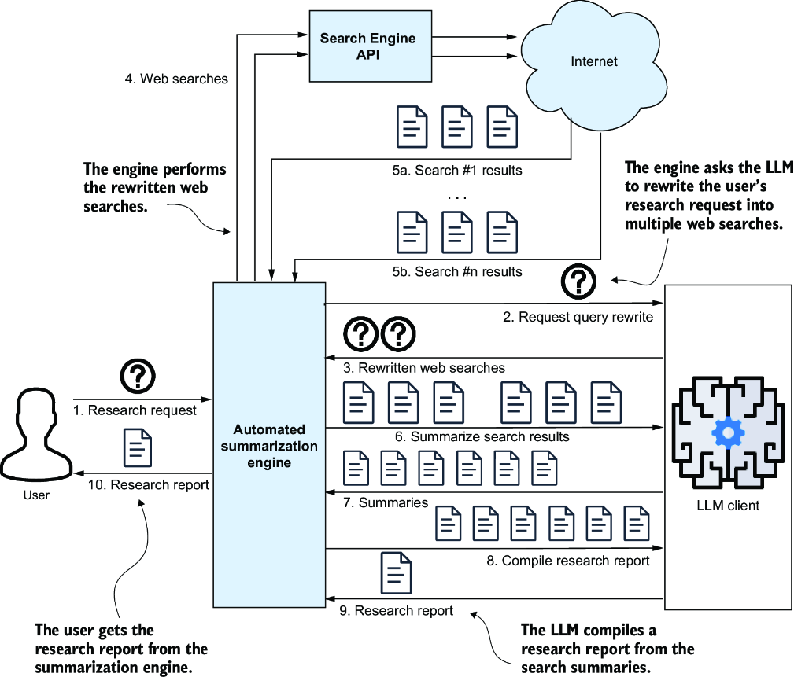
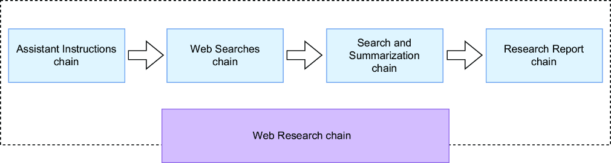
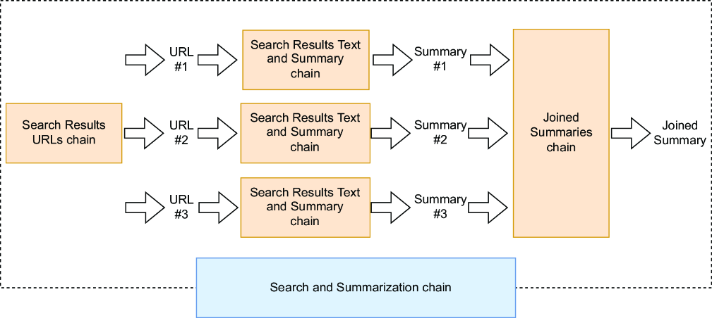
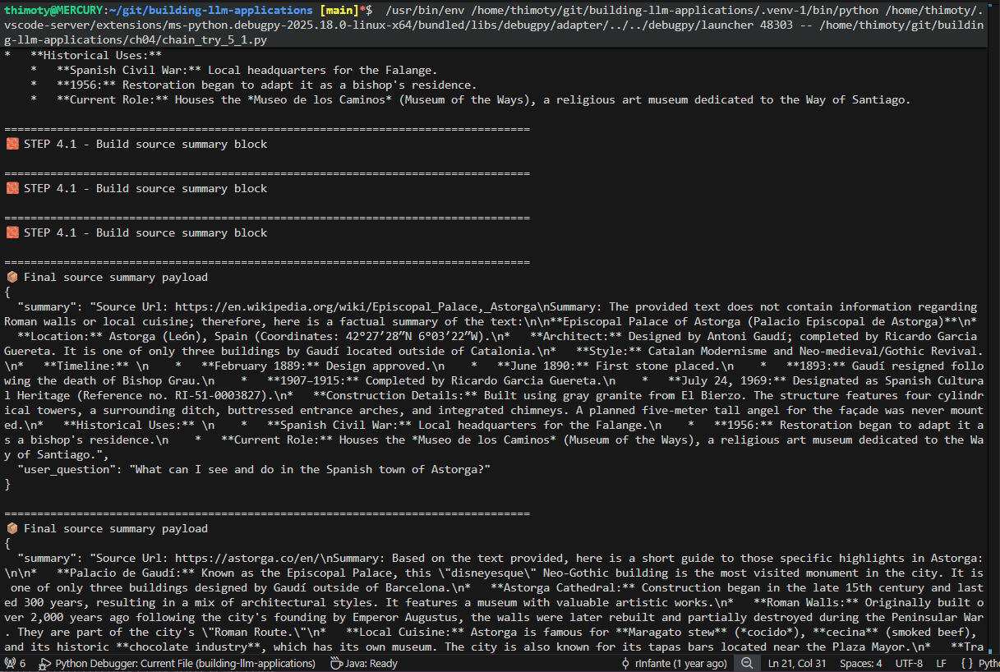
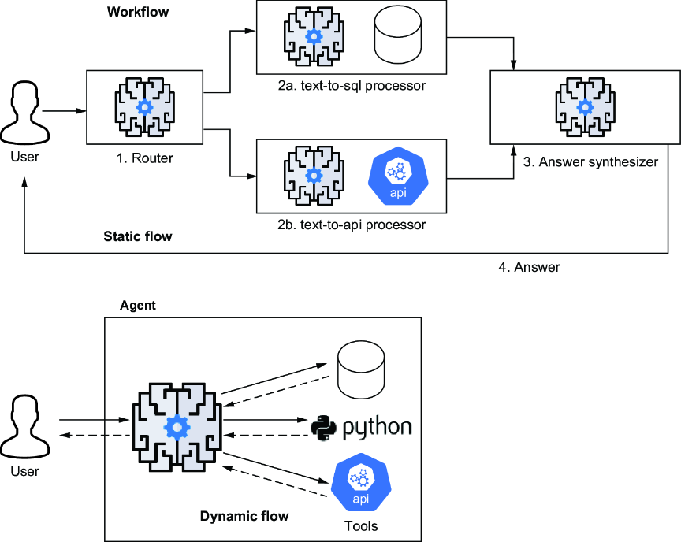
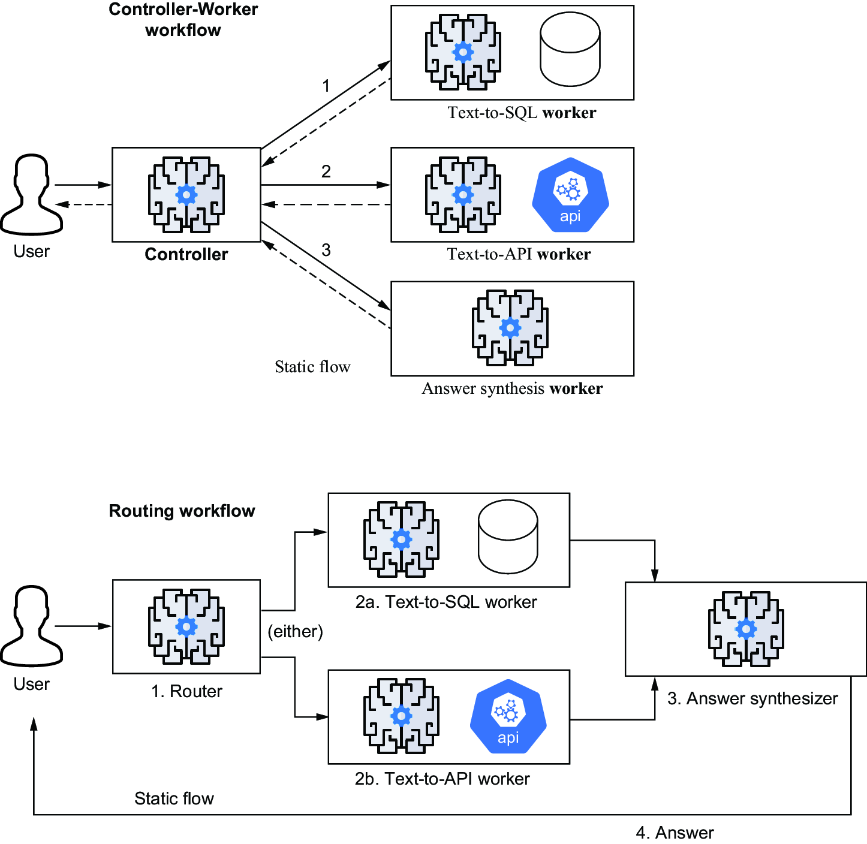
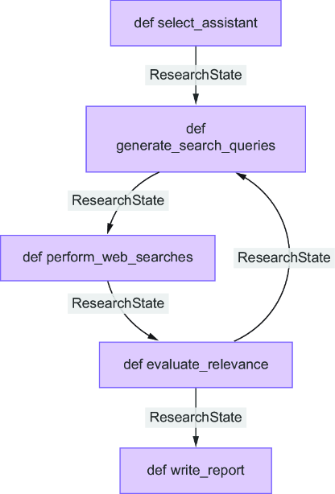
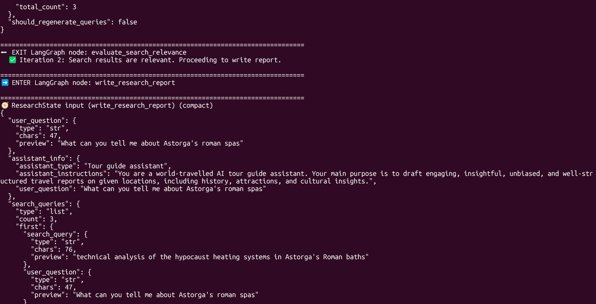
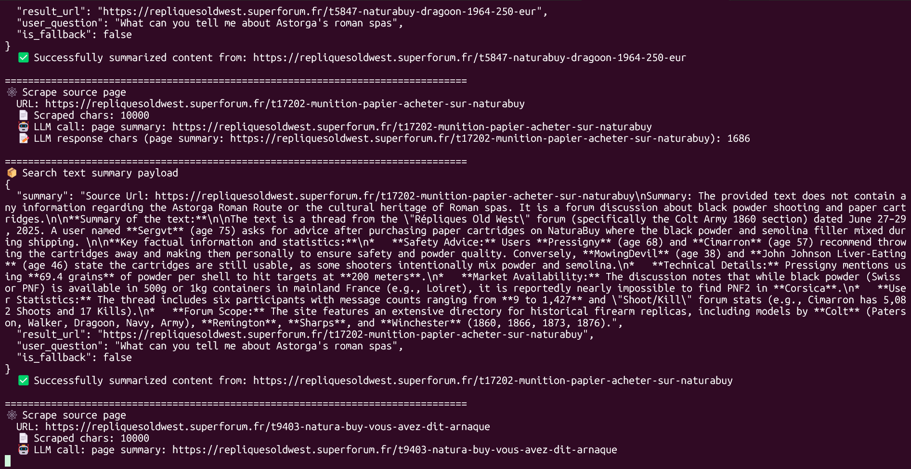

Learning outcomes
- Analyze the limitations of LLM context windows and the need for scalable summarization.
- Implement MapReduce and Refine strategies using LangChain and LCEL.
- Select the optimal summarization technique based on document count, size, and context requirements.
- Manage multi-document ingestion from various sources like Wikipedia, PDF, and DOCX.
- Explain the fundamentals of agentic workflows and their implementation using LangGraph.
Topics
Context window limits, MapReduce vs. Refine strategies, document loaders, LCEL chain composition, and transitioning from linear LangChain sequences to stateful LangGraph workflows (Core Components, StateGraph, and Typed State).
1. The Need for Automated Summarization
In modern data-driven environments, the volume of text information—from technical reports to entire books—frequently exceeds the capacity for manual review. Summarization engines are essential tools for automating the condensation of large document sets, a task that remains impractical and costly to perform manually even with general-purpose AI interfaces.
1.1 Context Window Constraints
Every Large Language Model (LLM) is constrained by a context window: the maximum number of tokens (words or characters) it can process in a single prompt. While newer models offer expanded windows, many production scenarios involve documents that still exceed these limits. Automated techniques allow developers to bypass these physical constraints by processing data in manageable segments.
1.2 Beyond Basic Prompting
While simple documents can be summarized using a basic prompt, real-world applications require more robust patterns. Using LangChain Expression Language (LCEL), we can build sequences of connected operations where the output of one step informs the next. This modular approach is the foundation for handling long-form content, consolidating multiple files, and preparing data for advanced AI agent architectures.
2. Summarizing Large Documents
When a single document exceeds the LLM’s context window, we must employ strategies that process the text in parts while maintaining the overall information integrity. The most common pattern for this scenario is the MapReduce approach.
2.1 The MapReduce Workflow
The MapReduce technique breaks down the summarization task into three distinct stages:
- Chunking: The large document is split into smaller, overlapping segments (chunks) using a tokenizer. This ensures each piece fits comfortably within the model's token limit.
- Map Stage: Each chunk is sent to the LLM independently and in parallel to generate an individual summary for that specific segment.
- Reduce Stage: The individual summaries from the map stage are combined into a single text, which is then summarized one final time to produce the cohesive global summary.

3. Summarizing Across Multiple Documents
In many real-world scenarios, you need to combine insights from various data sources rather than processing a single long text. This requires techniques for loading content from different formats and consolidating it into a coherent summary.
3.1 Multi-Source MapReduce
The MapReduce pattern can be extended to handle multiple documents (e.g., Wikipedia pages, Word files, PDFs). Each document is loaded into a Document object, mapped to an individual summary, and then reduced into a final consolidated output. This approach is highly scalable as each document can be processed in parallel.

3.2 The Refine Technique
Unlike MapReduce, the Refine technique is an incremental process. A final summary is constructed step-by-step by iteratively summarizing the combination of the current summary and the next document. This continues until all documents have been processed. This method is slower (sequential) but often preserves more context and nuances across documents than MapReduce.

3.3 Summarization Flowchart
Selecting the right technique depends on the document count, size, and your tolerance for latency or information loss. The following flowchart provides a decision matrix to choose between Stuffed prompts, MapReduce, or Refine based on the context window and the nature of the data.


4. Creating a Research Summarization Engine
A research summarization engine represents a more advanced application of the techniques discussed so far. Instead of summarizing a static document, this engine dynamically gathers information from the web to answer complex user queries.
4.1 Engine Overview
When researching a topic manually, you typically perform a web search, sift through pages, take notes, and compile a final summary. A semiautomated approach involves using an LLM to summarize each search result individually before manually consolidating them into a final report.

A fully automated research engine goes a step further by automating the entire pipeline: performing web searches, scraping content from multiple URLs, and synthesizing a comprehensive research report without human intervention between steps.

4.2 Core Engine Components
Building a research engine requires two fundamental capabilities beyond the LLM itself: the ability to find relevant information on the web and the ability to extract clean text from those pages.
- Web Searching: Utilizing search engine wrappers like
DuckDuckGoSearchAPIWrapperallows the engine to programmatically retrieve a list of URLs based on generated queries without requiring complex API keys.
Implementation: web_searching.py
Test script: web_searching_try.py - Web Scraping: Once URLs are identified, libraries like
BeautifulSoupandrequestsare used to fetch and parse the HTML content, stripping away navigation menus and ads to provide clean text for the LLM to process.
Implementation: web_scraping.py

web_searching_try.py.4.3 Query Rewriting and Multi-Query Generation
A single user question is often too broad or ambiguous for a search engine to return highly relevant results. To overcome this, we use Query Rewriting: an LLM processes the original question and generates multiple, more specific search queries. This ensures a broader coverage of the topic and provides diverse perspectives for the final synthesis.
While this initial approach is implemented sequentially—which increases the total processing time—it serves as the foundation for the more efficient parallel execution patterns we will explore using LCEL.

4.4 Prompt Engineering for Research
The success of an automated research engine relies on carefully crafted prompts that guide the LLM through different specialized tasks. We maintain these templates in a centralized prompts.py file for modularity and easier refinement.
Key prompts used in this architecture include:
- Assistant Selection: Determines the most relevant persona (e.g., "Tour Guide", "Technical Expert") and sets its specific operating instructions based on the user's question.
- Web Search Generation: Rewrites the broad user query into multiple, specific, and optimized search terms for DuckDuckGo.
- Content Summarization: Guides the LLM to extract only the most relevant facts and details from a raw, scraped web page while ignoring noise (ads, navigation).
- Research Report Synthesis: The final stage prompt that compiles all intermediate summaries and source URLs into a coherent, structured Markdown report.
Implementation: prompts.py
4.5 Sequential Research Pipeline
The first complete version of the engine follows a sequential pipeline. While slower than parallel execution, this linear flow is easier to debug and demonstrates the logical progression of information through the system.
The execution steps in the research_engine_seq.py implementation are:
- Assistant Selection: The LLM analyzes the query to choose the best research persona.
- Search Generation: The original question is rewritten into multiple optimized search queries.
- Execution Loop: The system iterates through each generated query, performing a web search and retrieving result URLs.
- Scraping and Summarization: For each URL, the content is scraped, cleaned, and summarized individually.
- Final Synthesis: All individual summaries are combined into a final structured research report.
Full Pipeline Code: research_engine_seq.py


4.6 Parallelized Research Engine with LCEL
The LangChain Expression Language (LCEL) provides a declarative way to chain components together. While the sequential pipeline is clear, it is inefficient for large-scale research. LCEL allows us to easily introduce parallel execution, streaming, and better error handling without complex threading code.
Key LCEL concepts used in this engine:
|(Pipe): Connects the output of one component to the input of the next.RunnableParallel: Executes multiple chains simultaneously on the same input..map(): Triggers multiple instances of a chain in parallel, one for each item in a list (e.g., for each search result URL).

Our implementation strategy involves building four specialized mini-chains integrated into a master Web Research chain:
- Assistant Instructions Chain: Selects the persona and generates system prompts. (Code:
chain_1_2.py) - Web Searches Chain: Rewrites the question into multiple queries. (Code:
chain_2_1.py) - Search and Summarization Chain: Handles parallel web searches, scraping, and per-page summarization. (Code:
chain_3_1.py,chain_4_1.py) - Research Report Chain: Synthesizes the final report from all gathered data.

By using the .map() operator, we can parallelize execution at two critical stages: running multiple web searches simultaneously and scraping multiple result URLs concurrently. This significantly reduces the total latency compared to the sequential version.

The Search and Summarization component (Figure M2.16) triggers parallel instances for each URL, while the final Web Research Chain (Figure M2.17) orchestrates the entire flow from question to report.

Parallelization occurs at two key stages:
- A separate instance of the Search and Summarization chain is created and executed simultaneously for each web search initiated by the Web Searches chain.
- For each search result generated by the Search Result URLs chain, an individual Search Result Text and Summary chain instance is launched to run in parallel.


Full LCEL Implementation: chain_5_1.py
5. Introduction to Agentic Workflows and LangGraph
Large language models (LLMs) are driving a new generation of applications that require more than simple prompt–response exchanges. As applications become more complex, agentic workflows have become essential—a pattern where the LLM orchestrates a structured, multistep process using predefined components and explicit state management.
Agentic workflows follow a well-defined and consistent sequence of steps. Instead of adapting their behavior dynamically during execution, they emphasize reliability, transparency, and control. In this approach, the LLM makes decisions within clearly defined boundaries, ensuring that each stage of the process remains structured and reproducible. Later in the book, we’ll explore agent architectures that build on these principles to achieve greater autonomy and adaptability.
5.1 Understanding Agentic Workflows and Agents
LLM-powered agent-based systems typically follow one of two core design patterns: agentic workflows and agents. Each pattern shapes how the application operates, as illustrated in Figure M2.19. Because these terms are often used interchangeably—but have important differences—it’s essential to understand exactly what is meant by agentic workflow and agent before diving deeper:
- Agentic workflow (or simply workflow): Guides an application through a fixed sequence of predetermined steps. The LLM is used to select among predefined options, helping the system complete tasks and manage the overall flow.
- Agent: Uses language models for more than just task execution: they reason, make decisions, and dynamically determine the next steps based on available tools and evolving context. Here, a tool typically refers to a function that returns or processes data.

While both patterns rely on the LLM to drive application behavior, workflows maintain a structured and predictable path, whereas agents can adapt in real time based on new information and shifting goals. Let’s discuss more about workflows next.
5.2 Workflows
Workflows use the LLM to pick the next step from a limited set of choices. They typically implement patterns such as Controller-Worker or Router, as illustrated in Figure M2.20.

In the Controller-Worker pattern, the controller spawns tasks for workers following a certain sequence. In the Router pattern, the LLM simply directs the task to the proper processor (or worker). This chapter will focus on workflows, and we’ll convert the web research application we built earlier with LangChain into an agentic workflow built with LangGraph.
5.3 Agents
LLM-based agents use language models to perceive data, reason about it, decide on actions, and achieve goals. Advanced agents retain memory of past interactions, build dynamic workflows, and even learn from feedback. Unlike fixed prompt–response systems, agents generate new flows based on real-time data and available tools. We’ll cover multi-tool agents as well as more complex multi-agent systems in later modules.
5.4 When to use agent-based architectures
The concepts of LLM-based workflows and agents are closely related and often overlap, with no sharp dividing line between them. Both approaches are most valuable when your application needs to break complex tasks into smaller steps, make decisions based on previous results, access external tools or data, or maintain context throughout extended interactions. It’s best to adopt agentic workflows or agents when your use case genuinely benefits from explicit state management and dynamic control—balancing the added power against the increased complexity.
5.5 LangGraph basics
LangGraph builds on LangChain to manage more complex agentic workflows with branching paths, stateful processing, and clear transitions between steps. It’s a framework for building stateful, multi-step AI applications using a graph-based structure. In LangGraph, nodes represent individual tasks, such as generating text, calling an API, or analyzing data. Edges define the paths that connect these tasks. The state is information that moves between nodes and updates at each step. This setup is better than traditional chains when you need to make decisions, manage state, or handle complex agentic workflows.
Note: LangGraph isn’t a replacement for LangChain but an extension. Think of LangChain as providing the building blocks and LangGraph as offering a blueprint to connect those parts into a complex system. LangChain gives you components such as LLMs, embeddings, and retrievers, while LangGraph helps you organize those components into a structured, stateful workflow.
To use LangGraph effectively, it’s important to understand a few key concepts, including the core components of a graph (nodes and edges), how state flows through the graph, and how conditional edges control its behavior. These are the building blocks we’ll explore in the next modules.
5.6 Moving from LangChain chains to LangGraph
LangChain’s simple, linear chains work for straightforward tasks but have limits when your applications get more complex. A typical LangChain setup often looks like this:
chain = (
prompt_template
| llm
| output_parser
)This setup struggles when tasks need to split into different paths, when you need to repeat steps based on new information, or when you want to manage state across multiple steps. It also falls short when multiple processes need to happen in parallel.
LangGraph solves these problems by offering better state management, conditional branching, and support for cyclical workflows. With explicit state management, you can define and track data consistently across the workflow, which is essential for memory and reasoning. Conditional branching allows agents to take different paths based on previous results, making decision-making smoother. Cyclical workflows let agents repeat tasks until they meet specific conditions, which helps refine results.
LangGraph also makes it easier to understand and debug complex workflows. Its graph-based structure offers a clearer view of how data flows through the system, which helps when you need to trace or fix problems. This graph-based approach works well for a range of use cases, such as multi-step reasoning, task planning, managing context in long conversations, coordinating research tasks, and automating business processes. As your applications get more complex, the benefits of using LangGraph’s agent-based architecture become clearer. It gives you the control and flexibility needed to build smart, multi-step systems that can adapt and make decisions on their own.
5.7 LangGraph Core Components
LangGraph provides a robust framework for building stateful, multi-step AI applications. Figure M2.21 presents the core components that form the LangGraph application’s foundation.

ResearchState) flows through the workflow. Nodes perform tasks, and edges create directed data flows between them.At the heart of every LangGraph application is a state object—in our example, ResearchState—which defines a clear and strongly typed state for the entire workflow. This state is typically defined as a Python TypedDict, ensuring that data passed between components is well-structured and type-checked.
In a LangGraph, each node functions as a processing unit. Nodes can handle tasks such as generating search queries, calling external APIs, summarizing results, and transforming data. The edges between nodes determine the directed flow of data, defining how information moves through the graph.
5.8 StateGraph and ResearchState
A core utility in LangGraph is the StateGraph class, which you use to define the graph that models your application’s workflow. State management is central to LangGraph: unlike chain-based methods that rely on implicit state, LangGraph enforces explicit, strongly typed state, making workflows more robust and predictable.
Here’s an extended version of the ResearchState that defines the structured data for our research engine:
from typing import TypedDict, Optional, List
class ResearchState(TypedDict):
user_question: str
assistant_info: Optional[dict]
search_queries: Optional[List[dict]]
search_results: Optional[List[dict]]
research_summary: Optional[str]
final_report: Optional[str]
ResearchState object being passed between nodes, including the state dump at entry and exit points.One of LangGraph’s powerful features is its conditional edges, which allow you to define dynamic execution paths based on the runtime state. Combined with entry points and end conditions, this gives you full control over where the graph begins, how it progresses, and when it completes.
5.9 Defining Graph Nodes and Edges
Nodes represent processing steps. Each node is a function that takes the current state and returns updates. You can add them to the graph using the add_node method:
graph.add_node("generate_queries", generate_search_queries)Edges define the valid transitions between these nodes. A simple linear edge is created with the add_edge method:
graph.add_edge("generate_queries", "perform_searches")To handle decision-making, you can use conditional edges. These use a function to choose the next node based on the current state. They are defined using the add_conditional_edges method:
def should_refine(state: dict) -> str:
if len(state["search_results"]) < 2:
return "refine_queries"
return "summarize_results"
graph.add_conditional_edges("perform_searches", should_refine)Finally, every graph needs a starting point (entry point) and a clear end condition (exit point). You set the starting node using set_entry_point, and you can direct the flow to a special END node to terminate the workflow:
from langgraph.graph import END
graph.set_entry_point("generate_queries")
graph.add_edge("write_report", END)
5.10 Environment Setup
To ensure a clean and reproducible environment for your LangGraph projects, it is recommended to use a virtual environment (venv). This isolates your project dependencies from the global Python installation.
1. Create the virtual environment:
python3 -m venv .venv2. Activate the virtual environment:
- Linux/macOS:
source .venv/bin/activate - Windows (Command Prompt):
.venv\Scripts\activate.bat - Windows (PowerShell):
.venv\Scripts\Activate.ps1
Once activated, your terminal prompt will typically show (.venv), indicating that any packages you install will be contained within this environment.
Guided lab
Execution steps
Explore hands-on implementations of summarization chains by running the notebooks in the ch03 and ch04 folders of the code repository. The lab covers TokenTextSplitter usage, full MapReduce LCEL chains, the implementation of the Refine technique function, and building a complete automated research summarization engine.
Setup for Chapter 4 Lab
To run and debug the research engine, follow these environment setup steps:
- Create Virtual Environment: Navigate to the
ch04folder and run:python3 -m venv env_ch04 - Activate & Install: Activate the environment and install dependencies:
source env_ch04/bin/activate && pip install -r requirements.txt - Configure Debugger: To use the VS Code debugger, ensure your
.vscode/launch.jsonis correctly configured to use the local virtual environment interpreter.
Reference: Example launch.json
Access the materials here:
Key takeaways
- Summarization Patterns: MapReduce and Refine are essential strategies for processing large documents that exceed an LLM's context window.
- Agentic Workflows vs. Agents: Workflows follow a structured, predictable sequence of steps, while agents use LLMs to dynamically reason and select tools in real-time.
- LangGraph Framework: An extension of LangChain that enables the creation of stateful, multi-step applications using a graph-based structure of nodes and edges.
- Core Components: LangGraph applications are built around Nodes (processing units), Edges (flow control), and a Typed State (shared data structure).
- State Management: Explicit, strongly typed state (e.g., via Python
TypedDict) ensures reliable data transitions and easier debugging in complex AI pipelines. - Conditional Logic: Using conditional edges allows workflows to adapt dynamically, such as looping back to refine search queries if initial results are insufficient.
Further reading
- Anthropic Research: Building Effective Agents
- LangChain Expression Language (LCEL) Interface: LCEL Interface Guide
- LangChain Summarization Documentation: Summarization Use Cases
- LangChain Expression Language (LCEL) Documentation: LCEL Concepts